Publications
* Corresponding author, Students/RAs under my supervision
2026

Less is More Afar: Responsive Design for Situated Visualization Based on Viewing Distance
Virtual Reality, 2026.
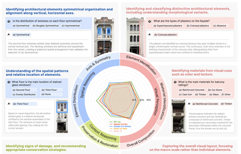
Fidelity-Driven Data Augmentation for Multimodal Large Language Model on Architectural Heritage Interpretation
npj Heritage Science, 2026.

Introducing ManyViews: an AI-assisted tool to support citizens' engagement in the design of urban spaces
International Journal of Human - Computer Studies, 2026.

DaVinci: Reinforcing Visual-Structural Syntax in MLLMs for Generalized Scientific Diagram Parsing
The Fourteenth International Conference on Learning Representations (ICLR), 2026.
2025
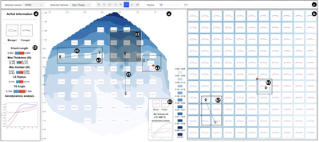
Latent Space Map for Visual Utilization of Generated Data
IEEE Transactions on Visualization and Computer Graphics, 2025.
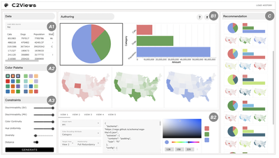
C2Views: Knowledge-based Colormap Design for Multiple-View Consistency
Proceedings of Pacific Graphics 2025, 2025.
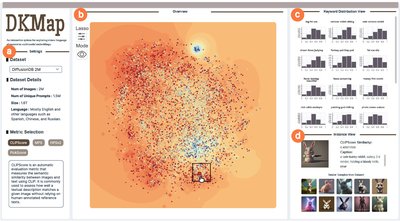
DKMap: Interactive Exploration of Vision-Language Alignment in Multimodal Embeddings via Dynamic Kernel Enhanced Projection
IEEE Transactions on Visualization and Computer Graphics (Proc. IEEE VIS 2025) , 32(1): 440 - 450, 2026.
Embodied Heritage by Integrating Digital and Physical Visualization of Eaves Tiles to Display Cultural Heritage Kinship
npj Heritage Science, Article No.: 354, Pages 1 - 17, 2025.

AKRMap: Adaptive Kernel Regression for Trustworthy Visualization of Cross-Modal Embeddings
Proceedings of International Conference on Machine Learning (ICML'25), 2025.
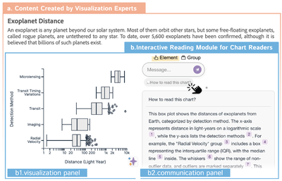
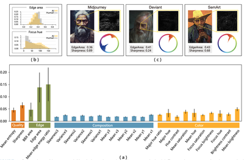
Unified Visual Comparison Framework for Human and AI Paintings using Neural Embeddings and Computational Aesthetics
IEEE Computer Graphics and Applications (Special Issue on Generative AI for Computer Graphics) , 45(2): 19-30, 2025.

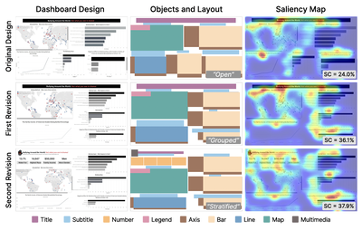
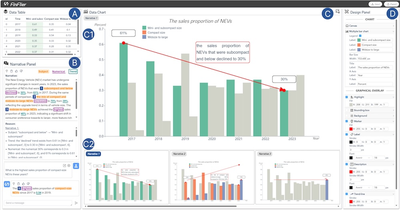

Centennial Drama Reimagined: An Immersive Experience of Intangible Cultural Heritage through Contextual Storytelling in Virtual Reality
ACM Journal on Computing and Cultural Heritage, 2025, 18(1), Article No.: 11, Pages 1 - 22.
2024

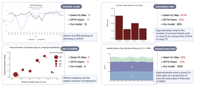
Advancing Multimodal Large Language Models in Chart Question Answering with Visualization-Referenced Instruction Tuning
IEEE Transactions on Visualization and Computer Graphics (Proc. IEEE VIS 2024), 31(1): 525 - 535, 2025.
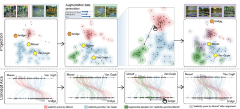
ModalChorus: Visual Probing and Alignment of Multi-modal Embeddings via Modal Fusion Map
IEEE Transactions on Visualization and Computer Graphics (Proc. IEEE VIS 2024), 31(1): 294 - 304, 2025.
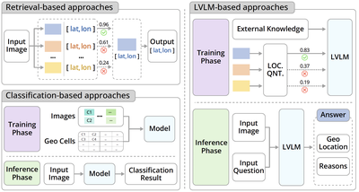
GeoReasoner: Geo-localization with Reasoning in Street Views using a Large Vision-Language Model
Proceedings of The International Conference on Machine Learning (ICML'24), Pages 29222-29233, 2024.
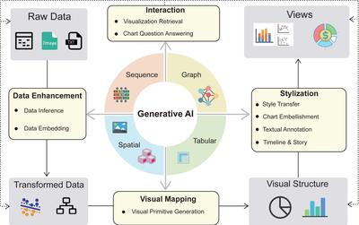
Generative AI for Visualization: State of the Art and Future Directions
Visual Informatics, 8(2): 43-66, 2024.
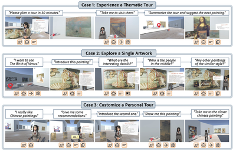
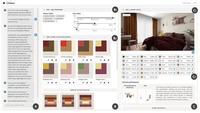
C2Ideas: Supporting Creative Interior Color Design Ideation with Large Language Model
Proceedings of The ACM CHI Conference on Human Factors in Computing Systems, 2024, Article 172, 1–18.
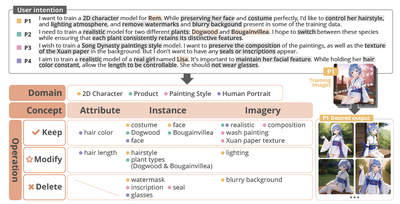
IntentTuner: An Interactive Framework for Integrating Human Intentions in Fine-tuning Text-to-Image Generative Models
Proceedings of The ACM CHI Conference on Human Factors in Computing Systems, 2024, Article 182, 1–18.
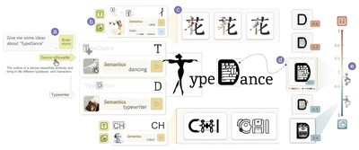
TypeDance: Creating Semantic Typographic Logos from Image through Personalized Generation
Proceedings of The ACM CHI Conference on Human Factors in Computing Systems, 2024, Article 175, 1–18.
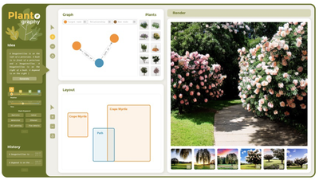
PlantoGraphy: Incoporating Iterative Design Process into Generative Artificial Intelligence for Landscape Rendering
Proceedings of The ACM CHI Conference on Human Factors in Computing Systems, 2024, Article 168, 1–19.
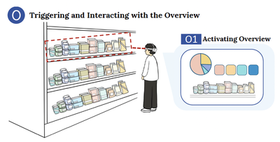
“Make Interaction Situated”: Designing User Acceptable Interaction for Situated Visualization in Public Environments
Proceedings of The ACM CHI Conference on Human Factors in Computing Systems, 2024, Article 196, 1–21.
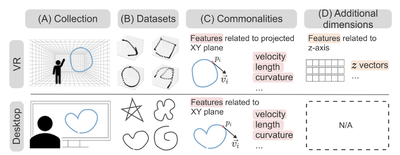

The Contemporary Art of Image Search: Iterative User Intent Expansion via Vision-Language Model
Proc. ACM Hum.-Comput. Interact., vol. 8, no. CSCW1, Article 180:1-31, 2024.
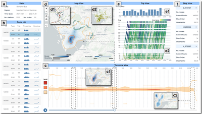
MetroBUX: A Topology-based Visual Analytics for Bus Operational Uncertainty EXploration
IEEE Transactions on Intelligent Transportation Systems, vol. 25, no. 6, pp. 5525-5538, 2024.

2023
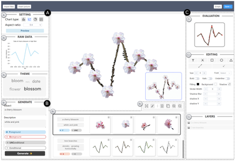
Let the Chart Spark: Embedding Semantic Context into Chart with Text-to-Image Generative Model
IEEE Transactions on Visualization and Computer Graphics (Proc. IEEE VIS 2023), 30(1): 284 - 294, 2024.
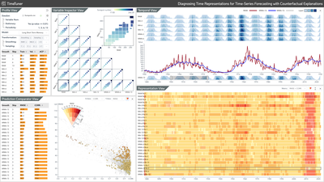
TimeTuner: Diagnosing Time Representations for Time-Series Forecasting with Counterfactual Explanations
IEEE Transactions on Visualization and Computer Graphics (Proc. IEEE VIS 2023), 30(1): 1183 - 1193, 2024.

WYTIWYR: A User Intent-Aware Framework with Multi-modal Inputs for Visualization Retrieval
Computer Graphics Forum (Proc. EuroVis 2023), 42(3): 311-322, 2023.
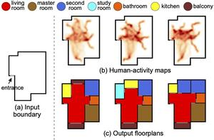
ActFloor-GAN: Activity-Guided Adversarial Networks for Human-Centric Floorplan Design
IEEE Transactions on Visualization and Computer Graphics, 29(3): 1610-1624, 2023.
2022
Effects of View Layout on Situated Analytics for Multiple Representations in Immersive Visualization
IEEE Transactions on Visualization and Computer Graphics (Proc. IEEE VIS 2022), 29(1): 440 - 450, 2023.
Deep Colormap Extraction from Visualizations
IEEE Transactions on Visualization and Computer Graphics, 28(12): 4048 - 4060, 2022.
2021 and Before
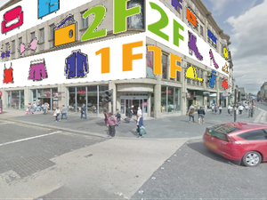
FloorLevel-Net: Recognizing Floor-Level Lines with Height-Attention-Guided Multi-task Learning
IEEE Transactions on Image Processing, 30: 6686-6699, 2021.
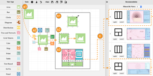
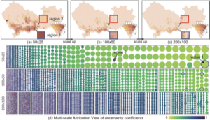
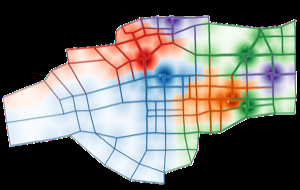

Route-Aware Edge Bundling for Visualizing Origin-Destination Trails in Urban Traffic
Computer Graphics Forum (Proc. EuroVis 2019), 38(3): 581-593, 2019.
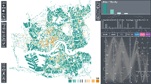
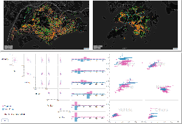
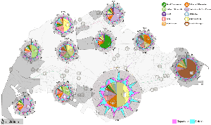
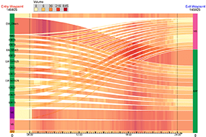
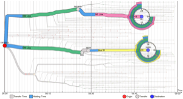